Carrying a state: RNNs & GRUs
Reader-friendly version of the 49 lecture slides: the lecture content in normal flow, with figure descriptions and data tables where the figure carries data. Open the presentation.
Slide 1

Carrying a state: RNNs & GRUs
Slide 2
Carrying a state
A transformer keeps every token it has read: its memory grows with the context. What does a brain keep?
Slide 3
Tasks that depend on the past
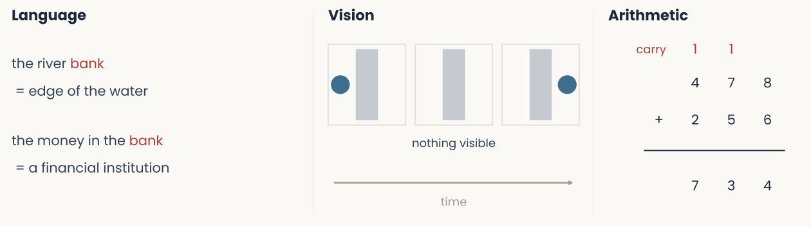
Diagram drawn for this lecture, in three columns titled Language, Vision and Arithmetic. Language: the word bank is marked in red in two phrases, the river bank, which means the edge of the water, and the money in the bank, which means a financial institution. Vision: three frames in time order along an arrow labeled time. A blue ball sits to the left of a gray screen, then the screen stands alone with the label nothing visible, then the ball appears to the right of the screen. Arithmetic: 478 plus 256 equals 734, with a red carry of 1 above the tens and the hundreds columns. In each column the current item (a word, an empty frame, a pair of digits) does not fix the answer, and the earlier items do. The slide uses the three cases to show that a network needs the past in its input or in a state.
Open full-size figure
- In each task, the current item (gold) does not determine the answer
- People hold the rest in working memory: what the sentence is about, where the ball went, the carry
Slide 5
Using the past: pass it in, or carry a state
![Two panels with the same task: read the words the, cat, sat, on, the, and predict the next word, mat, in a box above the last word. Left, look back, attention: each earlier word keeps a stored key and value; the current word, the, sends a query whose arrows reach back to all four stored entries, labeled reads every earlier entry; the query leads up to the prediction. Stored: one entry per word, grows with the text. Right, carry forward, recurrence: a chain of states h1 to h5, each fed by its word and by the previous state, labeled updates one state, word by word; only the last state, h5, is solid and leads up to the prediction. Stored: one state h, fixed size](../images/L18/state_look_back_vs_carry.svg)
Diagram drawn for this lecture, in two panels over the same six words, the cat sat on the mat. Left panel, look back (attention): every earlier word keeps a stored key and value, and arrows from all five stored entries converge on the output for the current word, mat. The caption says one entry is stored per token and the store grows with T, the number of tokens. Right panel, carry forward (recurrence): a chain of states h1 to h6, each fed by its word and by the previous state. Only the current state h6 is drawn solid, and the caption says one state h of fixed size is stored. The slide contrasts the two ways of using the past: keep every earlier token and read them all, or keep one state that each new input updates.
Open full-size figureLook back (attention): the past is passed in with the input → each new word, the whole sequence is reprocessed
Carry forward (recurrence): the past is in a state → one input at a time, fixed memory and work per step
Slide 6
A state: what is carried from one step to the next
- State : what a system carries from one step to the next (in a network, a vector of unit activities)
- Update: Readout:
| Input | State | |
|---|---|---|
| Language | the word bank | what the text is about (river or money) |
| Vision | an empty frame | where the ball is, how fast it moves |
| Arithmetic | two digits | the carry |
| Brain | incoming spikes | neural activity, voltages, synapses (slow: input adds, not resets) |
| Neural network | a vector | unit activities |
Slide 7
A state is a lossy summary
- Fixed size, a past of any length → a state cannot keep everything
- Sentence memory (Sachs 1967): people hear a story, then judge whether a test sentence is identical to one they heard
- Tested right away: changes of wording (active → passive) and of meaning are both detected
- ~80 syllables later: wording changes go unnoticed, meaning changes are still detected
- Meaning is kept, wording is lost: the state keeps what later processing needs
Slide 8
A state in cortex: the delayed-response task
![Reproduced from Funahashi, Bruce and Goldman-Rakic 1989, Fig. 1. A: timeline of the oculomotor delayed-response task: an intertrial interval, a fixation period F, a cue period C during which a peripheral cue is shown, a delay period D with only the fixation target, and a response period R followed by reward. B: one trial: the horizontal and vertical gaze traces stay flat from fixation to the end of the delay, then jump at the response; below, the spikes of one prefrontal neuron, dense through the whole delay](../images/L18/pub_funahashi1989_fig1_task.png)
Published figure: Fig. 1 of Funahashi, Bruce and Goldman-Rakic (1989), the oculomotor delayed-response task in monkey prefrontal cortex. Panel A is a timeline of one trial: an intertrial interval, a fixation period F, a cue period C in which a peripheral cue is shown, a delay period D in which only the fixation target is on, and a response period R followed by reward. Panel B shows one trial: the horizontal and vertical gaze traces stay flat from fixation to the end of the delay and then jump at the response. Below the gaze traces are the spikes of one prefrontal neuron, which are dense through the whole delay. The slide gives the durations: the cue flashes for 0.5 s at one of 8 locations and the delay lasts 3 s. The gaze traces show that the monkey keeps its eyes on the fixation point during the delay, so the location of the cue must be held in memory.
Open full-size figure- Monkey prefrontal cortex (single-neuron recordings): the delayed-response task, a classic test of working memory
- The monkey fixates (F); a cue (C) flashes at one of 8 locations; during a 3 s delay (D) nothing shows where it was; then it looks there (R)
- Bottom trace, one trial: background firing in the intertrial interval (ITI), then dense firing through the delay
Slide 9
A state in cortex: delay activity
![Reproduced from Funahashi, Bruce and Goldman-Rakic 1989, Fig. 3: the activity of one prefrontal neuron for cues at eight locations, arranged around a central diagram of the locations at 0, 45, 90, 135, 180, 225, 270 and 315 degrees. Each panel shows spike rasters over single trials and a histogram below, with vertical lines marking the cue C, the delay D and the response R. Only the panel for the cue at 270 degrees, at the bottom, shows dense firing through the whole 3-second delay; in the other panels the firing stays low or is suppressed](../images/L18/pub_funahashi1989_fig3_delay.png)
Published figure: Fig. 3 of Funahashi, Bruce and Goldman-Rakic (1989), the activity of one prefrontal neuron for cues at eight locations. A central diagram marks the fixation point and the eight cue locations at 0, 45, 90, 135, 180, 225, 270 and 315 degrees, and the panel for each location is placed around it. Each panel has spike rasters for single trials, one row per trial, and a histogram of the average firing below. Vertical lines mark the cue C, the delay D and the response R; the scale bars are 50 spikes per second and 1 s. Only the panel for the cue at 270 degrees, at the bottom, shows dense firing through the whole 3-second delay. In the other panels the firing stays low or is suppressed. The slide calls 270 degrees the preferred location of this neuron and uses the figure to show that the cued location is held in activity after the cue is gone.
Open full-size figure- One neuron, 8 cue locations (center); each panel: single trials, average below
- It fires through the delay only when the cue was at the bottom (270°): its preferred location. Cue at the top (45°–135°): below its ITI rate
- So the neuron is selective, and it keeps its selectivity through the delay: a population of such neurons holds the cued location
- Model: a recurrent network trained on this task develops units with the same delay activity → next, we build that recurrent unit
Slide 10
Building a recurrent unit
Goal: extend the model neuron of earlier lectures so it can hold a state
Slide 11
A first state: an integrator
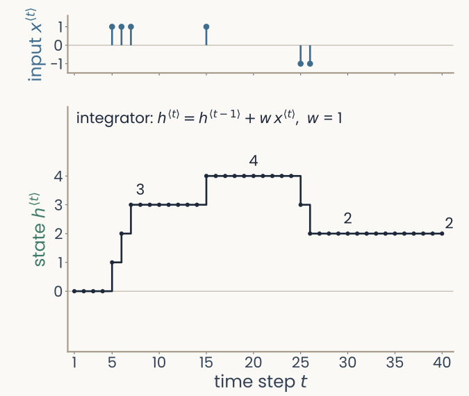
Computed here, over time steps 1 to 40. Top: the input x, blue stems of plus 1 at steps 5, 6, 7 and 15 and minus 1 at steps 25 and 26, zero elsewhere. Bottom: the running total h, a step curve that climbs to 3 after the first three pulses, to 4 after step 15, drops to 2 after the two negative pulses and stays at 2 until step 40
Open full-size figure
- Start from the linear model neuron: output , the current input only
- Add the old state: (an integrator; here )
- The state sums all inputs so far, and holds the sum once the input stops
Slide 12
A leaky integrator
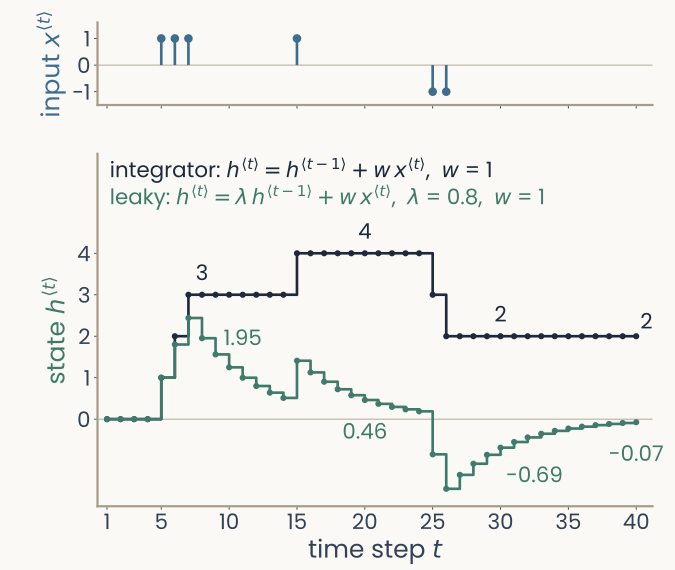
The same input and running total, with a second, green curve: the leaky state with lambda 0.8. It rises to 2.44 at step 7 and decays toward zero between pulses (0.46 at step 20), dips below zero after the negative pulses (minus 0.69 at step 30) and is back near zero, minus 0.07, at step 40, while the running total still holds 2
Open full-size figure
- Not plausible for a neuron: its voltage leaks back to rest (time constant ≈ 10–20 ms)
- Leaky integrator: keep a fraction : → near 1: a long memory
Slide 13
The recurrent unit: the input
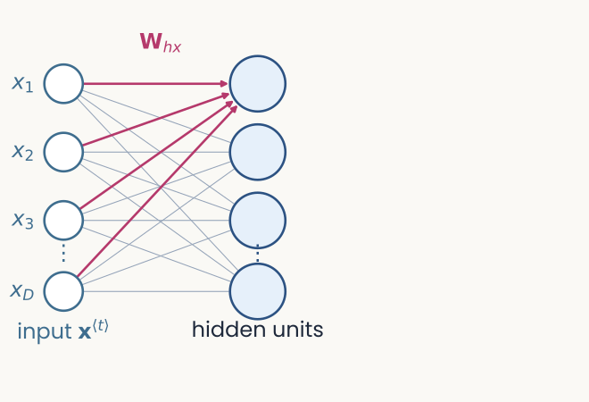
Diagram drawn for this lecture, the first of four frames that build one recurrent unit. The input vector x at step t is drawn as four bars at the bottom. An arrow labeled W h x leads up from it into a box of four units. The frame adds the input and its weights, and nothing else: the units compute a weighted sum of the input. The slide reads subscripts as destination from source, so W h x goes to the units h from the input x.
Open full-size figure
- Input : a vector at step (a word, an image)
- : weights from the input to the units (subscripts read destination ← source)
Slide 14
The recurrent unit: the state
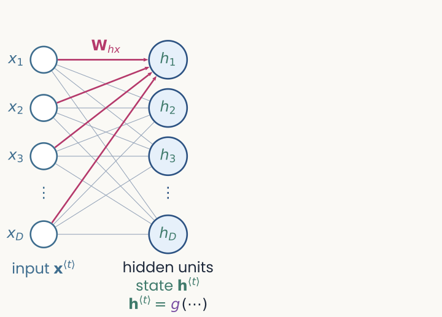
Diagram drawn for this lecture, the second of four frames building the recurrent unit. The input and the weights W h x are as in the first frame. The four units now carry the label h at step t, their activities, and a small g marks the nonlinearity applied to the weighted sum, usually tanh, with a bias. The frame adds the state and the nonlinearity. At this point the layer is feedforward, since the same input always gives the same output.
Open full-size figure
- The units' activities form the state
- : the nonlinearity (usually ); : a bias
- So far, a feedforward layer: the output depends on the current input only
Slide 15
The recurrent unit: the loop
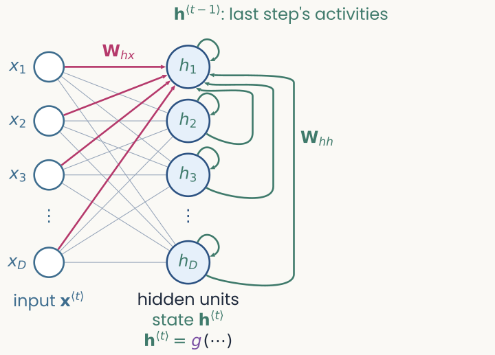
Diagram drawn for this lecture, the third of four frames building the recurrent unit. The frame adds a loop. An arrow leaves the units on the right, labeled h at step t minus 1, and comes back into them on the left through the weights W h h. The state at step t now depends on the input and on the previous state, which makes the unit a recurrent neural network. The loop carries the previous activities, not an instantaneous feedback, and the state starts at zero.
Open full-size figure
- One addition: the units' previous activities come back in, through
- The state now depends on the input and on the previous state: a recurrent neural network (RNN), often called a vanilla RNN (or Elman network)
- Start:
Slide 16
The recurrent unit: the readout
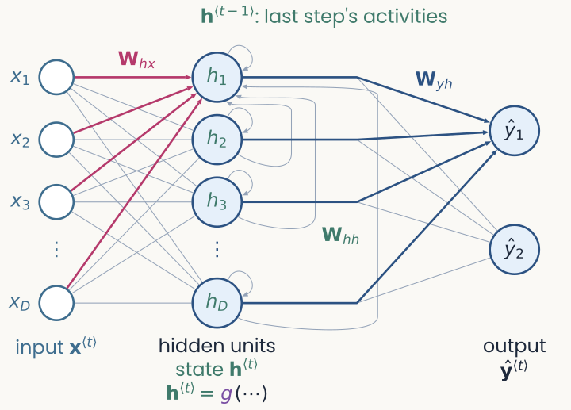
Diagram drawn for this lecture, the fourth and last frame building the recurrent unit. The frame adds a readout. An arrow labeled W y h goes up from the units to the output y-hat at step t. The readout maps the state to one score per output, and a softmax turns the scores into probabilities, as in the output layer of a language model. The three sets of weights, W h x, W h h and W y h, are the same at every step.
Open full-size figure
- Readout: maps the state to one score per output (the logits)
- Softmax → probabilities, as in a language model's output layer
- Three sets of weights, the same at every step
Slide 17
The state over time: a brief cue
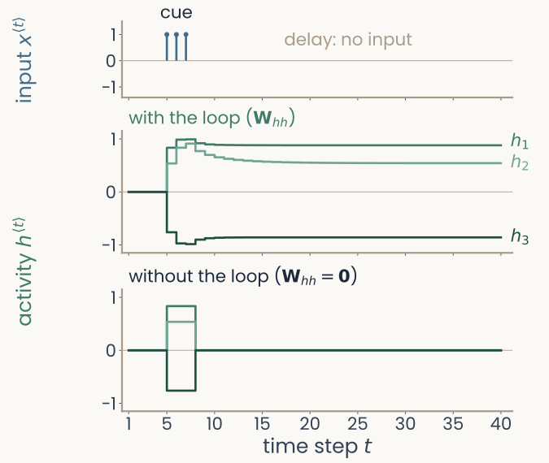
Computed for this slide: three hidden units of a small recurrent network over 40 time steps. Top: the input, a cue of 1 at steps 5, 6 and 7, then nothing (the delay). Middle, with the loop: the three units jump at the cue and stay there for the rest of the 40 steps, near 0.88, 0.54 and minus 0.86. Bottom, without the loop (W h h set to 0): the same units follow the cue and fall back to 0 at step 8
Open full-size figure
- Same units, run for 40 steps: a cue at –, then no input, as in the delayed-response task
- With the loop, the activity outlasts the cue and is held through the delay; without it (), it stops with the input
Slide 18
The state over time: a constant input
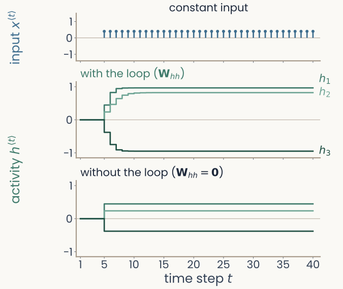
Computed for this slide: the same three units with a constant input of 0.4 from step 5 to step 40. With the loop, the units climb over a few steps to about 0.96, 0.82 and minus 0.95 and stay there. Without the loop, they jump at once to about 0.45, 0.24 and minus 0.38 and stay there, following the input
Open full-size figure
- Same units, a constant input from on
- With the loop, the activity builds up over several steps; without it, it jumps at once and stays
Slide 19
The state over time: a changing input
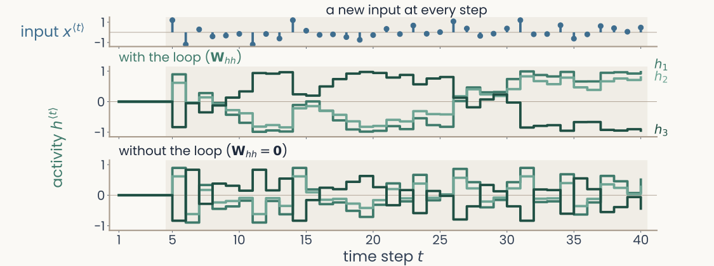
Computed for this slide: the same three units with a new input value at every step from step 5 on, between about minus 1.2 and 1.2. With the loop, each unit changes more slowly than the input and stays near plus or minus 1 for several steps, so its value depends on earlier inputs. Without the loop, the units jump with the input at every step
Open full-size figure
- Same units, a new input at every step (a word, a frame)
- With the loop, the activity depends on earlier inputs too; without it, it follows the current input only
Slide 22
Unrolling: one set of weights, layers deep
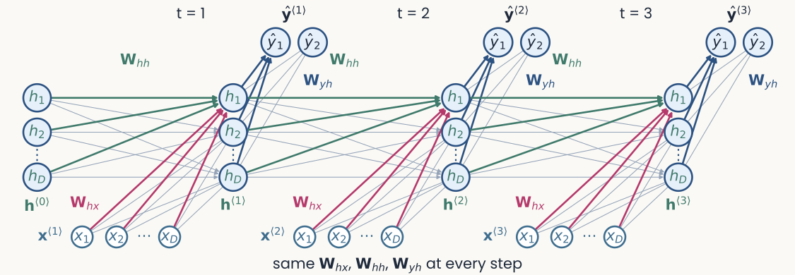
The recurrent network unrolled over three time steps, t = 1, 2, 3. At each step, an input column x1 to xD at the bottom feeds, through magenta weights W_hx, a column of hidden units h1 to hD, which feeds an output column y-hat 1 and 2 through W_yh. Magenta arrows W_hh link each hidden column to the next one, starting from h at step 0 on the left. Caption: same W_hx, W_hh, W_yh at every step
Open full-size figure
- The same weights are used at every time step, as a CNN reuses one filter at every position: the number of weights does not depend on
- Unrolled over , an RNN is a -deep network with shared weights
Slide 23
Training: backprop through time
a loss at every step (e.g., cross-entropy), summed over time
- Backprop through time (BPTT) is ordinary backpropagation on the unrolled network
- Each step uses a copy of the shared weights, so their gradient is the sum of the gradients of all the copies
Slide 24
Code: an RNN in PyTorch
import torch, torch.nn as nn
class RNN(nn.Module):
def __init__(self, d_in, d_hidden):
super().__init__()
self.W_hx = nn.Linear(d_in, d_hidden) # x -> h (+ b_h)
self.W_hh = nn.Linear(d_hidden, d_hidden, bias=False) # h -> h
def forward(self, x_seq): # x_seq: (T, d_in)
h = torch.zeros(self.W_hh.out_features)
H = []
for x_t in x_seq: # unroll over time
h = torch.tanh(self.W_hh(h) + self.W_hx(x_t)) # h^{<t>}
H.append(h)
return torch.stack(H) # (T, d_hidden)
The time loop is the unrolled network; loss.backward() runs BPTT.
Slide 25
Why long memories are hard to learn
- One unit, no input after step 0: , so
- is learned; the gradient to step 0 carries the same : below 1 it vanishes, above 1 it explodes
- A 100-step memory needs , where tiny changes matter:
- : 0.13 left · : 1 · : 7.2
- 0.98 to 1.02: a 50× change → gradient steps overshoot; training is unstable
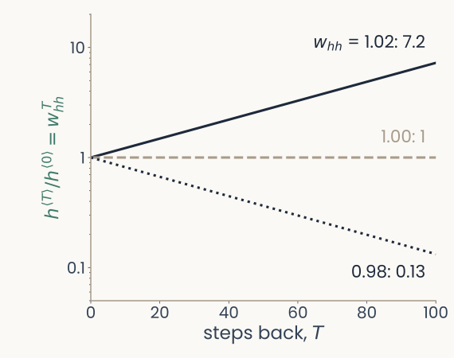
Computed for this slide: w_hh to the power T against the number of steps back T, 0 to 100, log axis from 0.05 to 20. With w_hh = 1.02 the curve rises to 7.2 at T = 100; with 1.00 it stays at 1; with 0.98 it falls to 0.13
Open full-size figure
Slide 26
Gating, step 1: the candidate
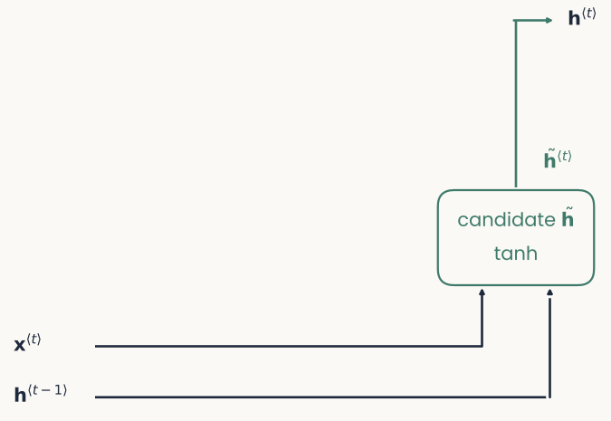
Gating, step 1 of 3: the plain recurrent unit. The input x at t and the old state h at t minus 1 run along two black lines at the bottom and feed a green box, the candidate h tilde (tanh); its output goes straight up to the new state h at t
Open full-size figure
- The vanilla RNN computes a candidate
- So far the candidate replaces the state at every step: nothing protects an old memory
Slide 27
Gating, step 2: an update gate
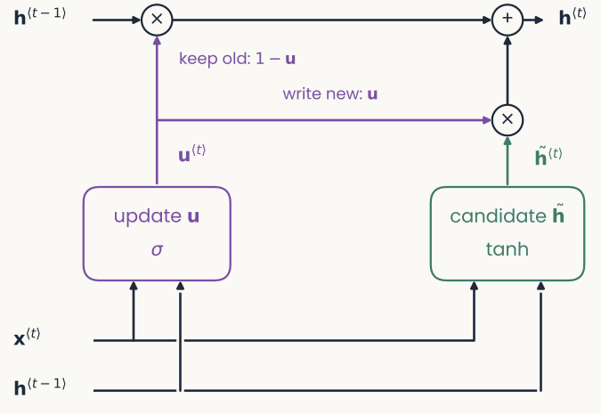
Gating, step 2 of 3: the same diagram with the update gate added. A violet box, update u (sigma), reads x and the old state. The old state now also runs along the top, through a multiply node labeled keep old, 1 minus u, and an add node, to the new state. The candidate is multiplied by u (write new) before it is added
Open full-size figure
- Update gate , between 0 and 1, from the input and the state: an input-dependent leak
- The old state is used twice: read (bottom) to compute the gate and the candidate; carried (top), scaled by
- → state and gradient pass through nearly unchanged
Slide 28
Gating, step 3: a reset gate → the GRU
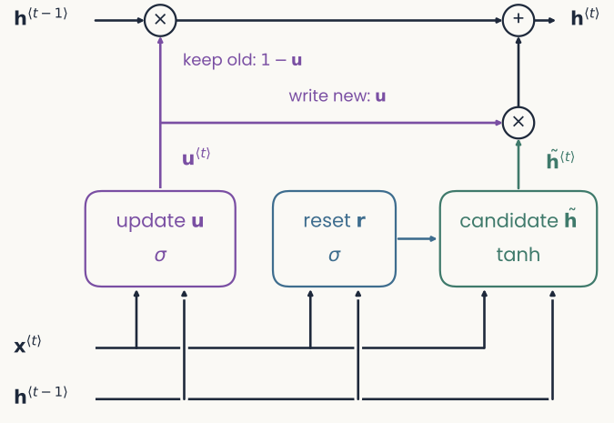
Gating, step 3 of 3, the full GRU: a blue box, reset r (sigma), is added between the update gate and the candidate; it reads x and the old state and feeds the candidate
Open full-size figure
- Reset gate : how much old state enters the candidate
- Update and reset gates together: the GRU (gated recurrent unit), a simplified LSTM (long short-term memory: three gates and a separate memory cell)
Slide 29
Where recurrent networks have been used
| Domain | What the network does | Examples |
|---|---|---|
| Language | predicts the next word | Elman 1990; Mikolov 2010 |
| Translation | reads a sentence, writes a translation | Sutskever 2014 |
| Speech | turns sound into text | Graves 2013 |
| Images | captions; object recognition in steps | Vinyals 2015; Spoerer 2017; Kubilius 2019 |
| Cognition | everyday routines and their slips | Botvinick & Plaut 2004 |
| Neuroscience | does a monkey's task; units vs. neurons | Mante 2013; Yang 2019 |
Slide 30
Recurrence in visual cortex
One image, held fixed: the state changes over processing steps and links distant parts of the image.
Slide 31
A feedforward sweep recognizes a flashed image
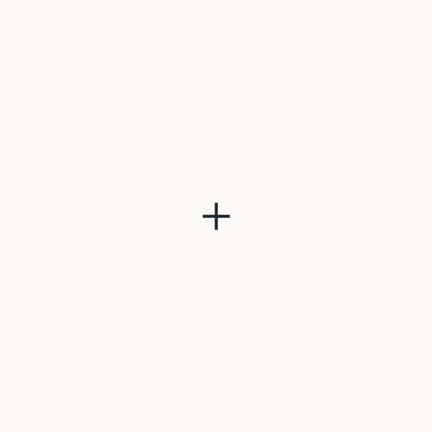
Animation of the masked rapid-categorization task, looping over eight trials: a blank screen, a fixation cross, a grayscale photograph flashed for 20 ms, a short blank, then a noise mask made from the same photograph; four photographs contain an animal and four do not
Open full-size figure
- Human behavior. Rapid categorization: animal or not, from a single flash
- Image for 20 ms, then a mask 50 ms after onset → little time for recurrent processing
- With an early mask, one feedforward sweep is enough
Slide 34
Cortex is not a single sweep
- Monkey visual cortex (anatomy): ventral stream V1 → V2 → V4 → IT
- Feedforward sweep: one pass up the hierarchy; what HMAX and CNNs model
- Horizontal connections within each area
- Top-down (feedback) connections from higher to lower areas
- Depth in time, not in layers; needed when parts of the image must be linked across space
Slide 35
From the recurrent unit to visual cortex
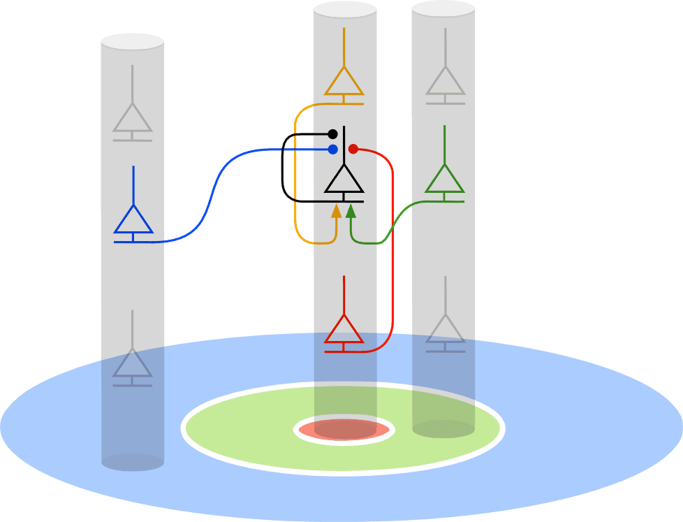
Diagram from an earlier lecture of this course, showing cortical columns as gray cylinders above a patch of visual field. The patch has a red center, a green ring around it and a blue outer region. A neuron in the central column receives a blue connection from a neuron in a distant column, a green connection from a neuron in a neighboring column, and gold and red connections from neurons above and below it in its own column. The drawing follows the circuit model of Mély, Linsley and Serre (2018). The red region is the classical receptive field, which drives the neuron. The green and blue regions are the surround, which changes the response through horizontal connections: the near surround excites neurons with the same preferred orientation and the far surround inhibits them.
Open full-size figure
- In the RNN so far, connects every unit to all others: no positions in space
- Visual cortex is retinotopic: a cortical column (gray) sees one location; neighboring columns see neighboring locations
- Horizontal connections are local and the same everywhere ( becomes a convolution)
Slide 36
Horizontal connections link distant parts of the image
Diagram from an earlier lecture of this course, showing cortical columns as gray cylinders above a patch of visual field. The patch has a red center, a green ring around it and a blue outer region. A neuron in the central column receives a blue connection from a neuron in a distant column, a green connection from a neuron in a neighboring column, and gold and red connections from neurons above and below it in its own column. The drawing follows the circuit model of Mély, Linsley and Serre (2018). The red region is the classical receptive field, which drives the neuron. The green and blue regions are the surround, which changes the response through horizontal connections: the near surround excites neurons with the same preferred orientation and the far surround inhibits them.
Open full-size figure- In the RNN so far, connects every unit to all others: no positions in space
- Visual cortex is retinotopic: a cortical column (gray) sees one location; neighboring columns see neighboring locations
- Horizontal connections are local and the same everywhere ( becomes a convolution)
- Center (red) drives the neuron; the surround (green, blue) modulates it
- Context crosses the map one neighborhood per step: linking distant parts takes many steps
Slide 37
One circuit explains contextual illusions

Figure of three contextual illusions, one per column, each with a top and a bottom version. Left, tilt illusion: a central disc of vertical black and white stripes inside a ring of stripes tilted slightly from vertical in the top row and close to horizontal in the bottom row. Middle, color induction: an identical gray center on a pink ring in the top row and on a gray ring in the bottom row. Right, ring induction: concentric rings of green, purple and orange around a white center, in two versions. The two centers in each column are physically identical, and the surround changes what they look like. The slide credits these illusions to the circuit model of Mély, Linsley and Serre (2018), which reproduces them with one set of parameters.
Open full-size figureThe two centers in each column are physically identical
- Human perception. Tilt illusion: a tilted surround shifts the perceived orientation of the center
- Color induction: the same gray center looks different on a pink and on a gray surround
- Model: with one set of parameters, near excitation and far inhibition reproduce these shifts in orientation, color, motion and depth
- If illusions are side effects of linking fragments into objects, tasks that require grouping should need this circuit
Slide 38
Curve tracing in monkey V1: the task
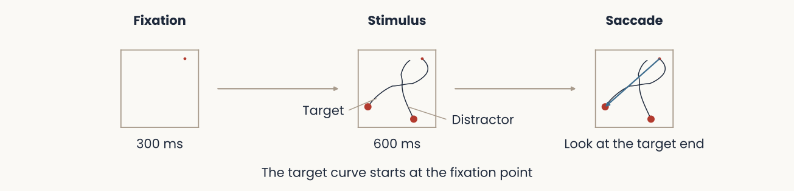
Reproduced from Pooresmaeili and Roelfsema 2014, Fig. 2A: the trial of the monkey curve-tracing task in three screens. Fixation, 300 ms, a single red fixation point. Stimulus, 600 ms: two black curves cross, a target curve running from the fixation point to a red dot at the lower left and a distractor curve ending in a red dot at the lower right. Saccade: the monkey makes an eye movement, drawn as a dashed arrow, to the end dot of the target curve
Open full-size figure
- Monkey V1 (electrophysiology). Curve tracing: two curves; the monkey makes an eye movement to the end of the curve that starts at the fixation point
- Two curves cross or pass close; only one is connected to fixation
- Does a V1 neuron respond differently on the target curve and on the distractor?
Slide 39
Grouping spreads along a curve in V1
![Reproduced from Pooresmaeili and Roelfsema 2014, Fig. 4A, two panels. Above each, two small displays with the same curves and the same receptive field (a square) far along a curve: in one display that curve is connected to the fixation point (attention in RF, red), in the other it is not (attention outside RF, blue). Below, the average V1 response over time (N = 34 recording sites): both traces share the first peak, then the red trace stays higher. The difference starts at 164 ms when the distractor is far (large gap, left) and at 240 ms when it passes close (small gap, right)](../images/L18/pub_pooresmaeili2014_fig4a_gap.png)
Reproduced from Pooresmaeili and Roelfsema 2014, Fig. 4A, two panels. Above each, two small displays with the same curves and the same receptive field (a square) far along a curve: in one display that curve is connected to the fixation point (attention in RF, red), in the other it is not (attention outside RF, blue). Below, the average V1 response over time (N = 34 recording sites): both traces share the first peak, then the red trace stays higher. The difference starts at 164 ms when the distractor is far (large gap, left) and at 240 ms when it passes close (small gap, right)
Open full-size figure- Monkey V1 (electrophysiology): the same curve in the receptive field (square); only its link to the fixation point changes
- On the target curve (red) neurons fire more than on the distractor (blue): an enhancement, after the first response
- Far along the curve it starts at 164 ms; when the distractor passes close, at 240 ms
Slide 40
Why a close distractor slows the spread
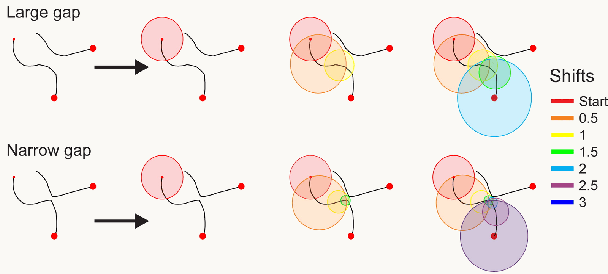
Reproduced from Pooresmaeili and Roelfsema 2014, Fig. 6A, growth cone of attention. Two rows, large gap and narrow gap. Starting at the fixation point, colored circles mark successive shifts of the attended region along the target curve: start, 0.5, 1, 1.5, 2, 2.5, 3. With a large gap the circles are large and reach the end of the curve in about 2 shifts; with a narrow gap they shrink where the distractor passes close and need about 3
Open full-size figure
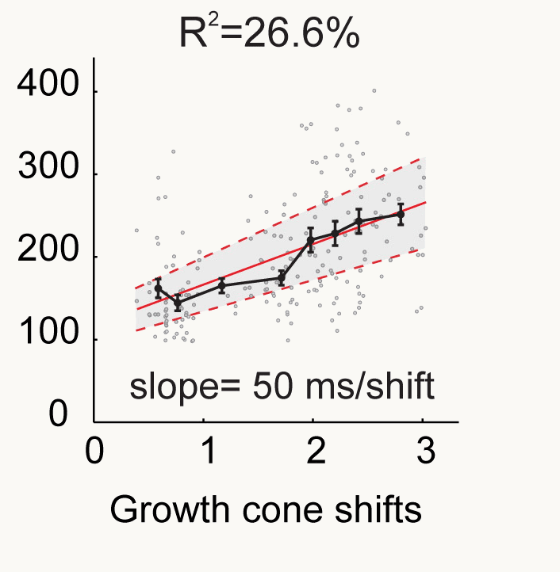
Reproduced from Pooresmaeili and Roelfsema 2014, Fig. 6D: measured onset latency, 0 to 400 ms, against growth-cone shifts, 0 to 3; binned means rise along a line with a slope of 50 ms per shift
Open full-size figure
- Growth cone: the enhancement advances in steps as large as the free space around the curve; a close distractor shrinks them
- Counted in steps, onset rises ~50 ms per step (right); a circuit trained on Pathfinder does the same
Slide 41
Pathfinder: curve tracing for networks

Published figure: Fig. 1b of Linsley et al. (2018), two Pathfinder images. Each shows white dashed curves on a black background and two white dots. In the left image one long dashed path joins the two dots. In the right image the dots sit on different paths. The task is to answer whether the two dots are joined by one dashed path. The slide notes that people solve it quickly and accurately, and that the answer depends on every dash along a path that can wander anywhere in the image.
Open full-size figure- Task for people and models. Pathfinder: are the two dots joined by one dashed path? People answer quickly and accurately
- Each unit sees only a small patch of the image (its receptive field), while the path can wander anywhere
- hGRU (our lab): horizontal connections pass activity from dash to dash, as in curve tracing in V1
- Transformers fail to learn its longest versions (shown later)
Slide 42
Recurrence vs. depth on Pathfinder
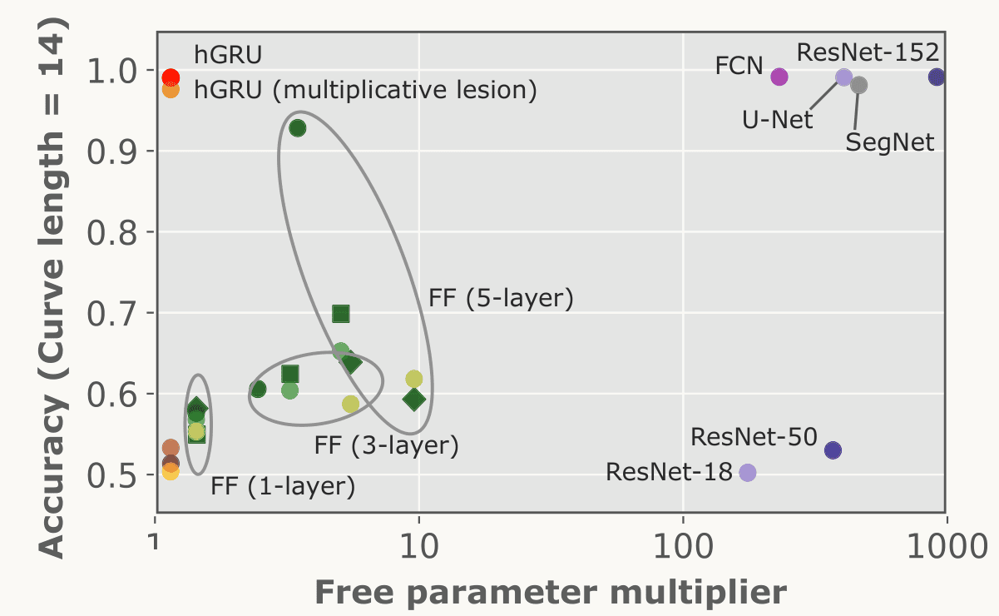
Published figure: Fig. 3c of Linsley et al. (2018), replotted for this lecture. Each dot is one network. The horizontal axis is the number of free parameters relative to the hGRU, on a logarithmic scale from 1 to 1000. The vertical axis is accuracy on the longest Pathfinder paths, from 0.5 to 1. The hGRU reaches 0.99 at 1 times the parameters. Feedforward networks with 1, 3 or 5 layers stay between 0.5 and 0.93, at 1.4 to 9.5 times the parameters. Only large networks such as FCN, U-Net, SegNet and ResNet-152 reach 0.98 to 0.99, at about 230 to 900 times the parameters. ResNet-50 and ResNet-18 stay near chance. The slide concludes that one recurrent layer matches feedforward networks with 200 to 900 times more parameters.
Open full-size figure
- Model. hGRU (horizontal GRU): a recurrent circuit with GRU-like gates; is a convolution (each unit connected to its neighbors in space). One layer: ~99% on the longest paths
- Feedforward CNNs match it only with 200 to 900 times more parameters; ResNet-18 and ResNet-50 stay at chance
- Activity propagates from dash to dash, one step at a time
Slide 43
Horizontal vs. top-down connections
![Reproduced from Kim et al. 2020, Figs. 4a and 5a. Top, Pathfinder: example images with a yes and a no answer, and accuracy for four circuits against human accuracy near 96 percent. Horizontal plus top-down and horizontal only reach about 96 percent, top-down only about 63 percent, no recurrence 50 percent. Bottom, cABC, where the two marked points are on the same letter or not: horizontal plus top-down about 88 percent, top-down only about 87 percent, horizontal only about 54 percent, no recurrence 50 percent, human accuracy about 84 percent](../images/L18/kim2020_tasks_bars.svg)
Reproduced from Kim et al. 2020, Figs. 4a and 5a. Top, Pathfinder: example images with a yes and a no answer, and accuracy for four circuits against human accuracy near 96 percent. Horizontal plus top-down and horizontal only reach about 96 percent, top-down only about 63 percent, no recurrence 50 percent. Bottom, cABC, where the two marked points are on the same letter or not: horizontal plus top-down about 88 percent, top-down only about 87 percent, horizontal only about 54 percent, no recurrence 50 percent, human accuracy about 84 percent
Open full-size figure- Models (human accuracy as reference). cABC (cluttered ABC): are the two marked points on the same letter? The letters overlap, so local continuation of a line is no longer enough
- Horizontal alone: Pathfinder, not cABC; top-down alone: the reverse → line continuation needs horizontal links, letter shape needs top-down links
- Both together reach human accuracy on both tasks; without recurrence, accuracy stays at chance
Slide 44
Grouping fills in an object over steps
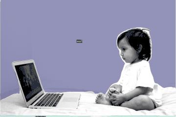
Animation from Linsley et al. (2020), a photograph of a baby at a laptop. Colored object masks start in a few places and spread over the model's successive recurrent steps until each object is filled. Each color marks one object that the network separates.
Open full-size figure
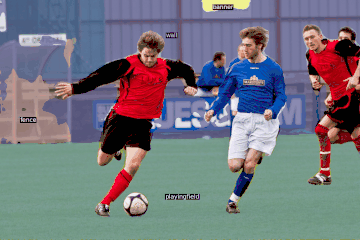
Animation from Linsley et al. (2020), a photograph of soccer players on a field. Colored object masks start in a few places and spread over the model's successive recurrent steps until each object is filled. Each color marks one object that the network separates.
Open full-size figure

Animation from Linsley et al. (2020), a photograph of two dancers. Colored object masks start in a few places and spread over the model's successive recurrent steps until each object is filled. Each color marks one object that the network separates.
Open full-size figure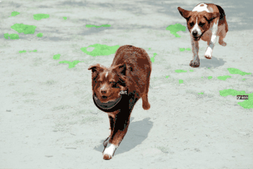
Animation from Linsley et al. (2020), a photograph of two dogs. Colored object masks start in a few places and spread over the model's successive recurrent steps until each object is filled. Each color marks one object that the network separates. The four animations illustrate panoptic segmentation, which labels every pixel by category and separates individual objects, by a feedforward network with a horizontal recurrent circuit added.
Open full-size figure
- Model: a horizontal recurrent circuit added to a feedforward network improves panoptic segmentation (label every pixel by category and separate individual objects), with fewer parameters
- Activity starts in a few places and spreads until each object is filled; learned from the task, not built in
Slide 45
Grouping time follows human reaction times

Figure replotted for this lecture. Left: a black and white outline of two animals, with a fixation dot labeled Fix and probe dots A, B and C on the fixated animal at increasing distance along its body, and three probe dots D on the other animal. Middle, humans: reaction time in milliseconds rises from about 708 at A to 741 at B, 761 at C and 767 at D, after Jeurissen, Self and Roelfsema (2016). Right, recurrent circuit: the model's reaction time, in recurrent steps, rises in the same order, from about 2.5 at A to 5.5 at B, 10 at C and 17 at D, from the circuit of Goetschalckx et al. (2023). The model was never fit to these data. The two vertical axes are scaled independently and the model times are in steps, not milliseconds.
Open full-size figure- Human behavior: reaction time rises from A to C, longest on the other object (D)
- Model: a circuit trained to group (never fit to these data) needs more steps in the same order
Slide 46
PathTracker: Pathfinder in time
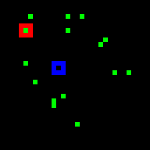
Animation of the PathTracker task from Linsley et al. (2021): a dot moves among identical distractor dots on a black background, starting from a red marker. The question is whether the dot ends on the blue goal marker. The slide says the task uses 15 identical dots over 32 frames, so the answer has to be carried in the state.
Open full-size figure
Figure from the Serre lab (Linsley, Dhimoïla, Karkada Ashok, Kim and Serre, in submission): two scatter plots of PathTracker accuracy, 50 to 100 percent, with human accuracy marked at 90 percent by a dashed line. Left, compute efficiency: accuracy against training step time in milliseconds, on a logarithmic scale. Right, parameter efficiency: accuracy against the number of parameters, on a logarithmic scale. The sCSSM models, in blue, form an upper front near 80 to 85 percent. Mamba-2, Gated DeltaNet and ConvS5 reach about 70 percent, and transformers and S4ND stay near 50 percent, as do sCSSM versions without the temporal recurrence or without spatial kernels. Each dot is one trained model and the lines are the best models at each budget.
Open full-size figure
- Task: a dot moves among 15 identical ones along an invisible contour. Does it end on the blue marker?
- Models: our lab's recurrent model with a 2-D state (sCSSM) beats Mamba; transformers stay at chance, as on the longest Pathfinder
Slide 47
Recap
- Two ways to keep the past: pass it in with the input (attention), or carry a fixed-size state forward (recurrence)
- A state is a lossy summary of the past; prefrontal neurons hold one in their delay activity
- Build-up: integrator → leak → network with (vanilla RNN) → BPTT → gates (GRU, a simpler LSTM): the input sets the leak
- Long memories are hard to learn: the gradient carries
- Visual cortex loops: local horizontal connections spread grouping step by step along a curve (V1), in Pathfinder and in PathTracker, where transformers fail
Slide 48
Further reading
Optional: for going deeper, or as a starting point for the final project.
- Dao & Gu ICML 2024: state-space models and attention as two ways to compute one family of models
- Zucchet & Orvieto NeurIPS 2024: why long memories are hard to learn even when gradients behave
- Feng et al. arXiv 2024: simplified GRUs and LSTMs that train in parallel and match Mamba
- Bick, Xing & Gu arXiv 2026: keep 2% of attention heads, make the rest recurrent
Slide 49
Minute paper
Submit on Canvas → Minute papers → Minute Paper 19 (access code read out in class).
Write three brief points in your own words:
- Visual cortex is full of local horizontal connections. Why would a network built this way take longer to group the parts of some images than others? What in today's lecture (neurons, behavior, models) supports this?
- Something you do not yet understand, or a question still open
- Another idea you found interesting, and why it matters for brains, behavior or AI
Credit for a thoughtful attempt, not for being correct.